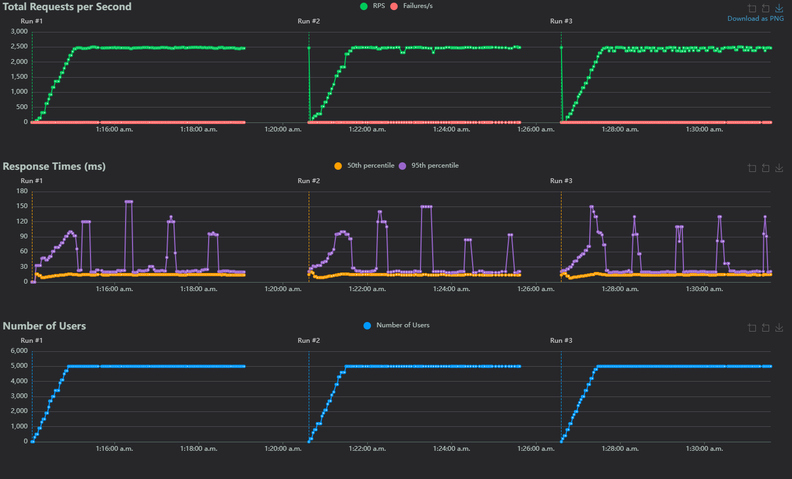

Sockets
Sockets
This test is just comparing a very naive and simple approach to a multithreaded HTTP server, with a hard coded result. This test doesn't provide a ton of value, besides helping me test how locust worked.
Methodology
All tests were run using:
- locust (version 2.32.1) to generate load and graphs
- Ran using
locust --processes -1to use all available threads - Settings used
- Direct IP connection (i.e.
http://192.168.1.1:<port>) - Number of users 2, 500 and 5,000 (separate tests)
- Users/sec 100
- Time 5 mins
- Tasks
- A single GET request per user to
/
- Direct IP connection (i.e.
- Load generated on a separate machine
- Connected via an ethernet 2.5Gbps connection
- 16 cores, 32 threads
- 32GB RAM
Results
Some warnings before reading the results and methodology:
- This test did not last long enough for lengthy GC's to cause problems
- 5k and 2.5k concurrent users on something this simplistic is largely unreasonable
- 100 users/sec is also unreasonable, and gives little chance for servers to adapt to load
- Closer to a DDOS than a typical usage pattern
- The task itself is incredibly simplistic, and is not reasonable (no DB calls, no template parsing, etc.)
5,000 users

*Python is run 1, Java is run 2, go is run 3
Under Load :
| Language | Response times (ms) 50th Percentile | Response times (ms) 95th Percentile | Requests per second | Number of users | Link | Source |
|---|---|---|---|---|---|---|
| Go | 15 | 90 | ~2,472 | 5,000 | Link | Link |
| Python | 12 | 90 | ~2,470 | 5,000 | Link | Link |
| Java | 12 | 90 | ~2,475 | 5,000 | Link | Link |
*Response times calculated as where is the maximum response time under full 10k load, and is the minimum check links in table for more granular details
Takeaways:
- They're all essentially equivalent, and within margin of error
2,500 users
Under Load :
| Language | Response times (ms) 50th Percentile | Response times (ms) 95th Percentile | Requests per second | Number of users | Link | Source |
|---|---|---|---|---|---|---|
| Go | 11 | 79 | ~1,250 | 2,500 | Link | Link |
| Python | 12 | 60 | ~1240 | 2,500 | Link | Link |
| Java | 12 | 35 | ~1243 | 2,500 | Link | Link |
*Response times calculated as where is the maximum response time under full 10k load, and is the minimum check links in table for more granular details
Takeaways:
- They're all essentially equivalent, and within margin of error